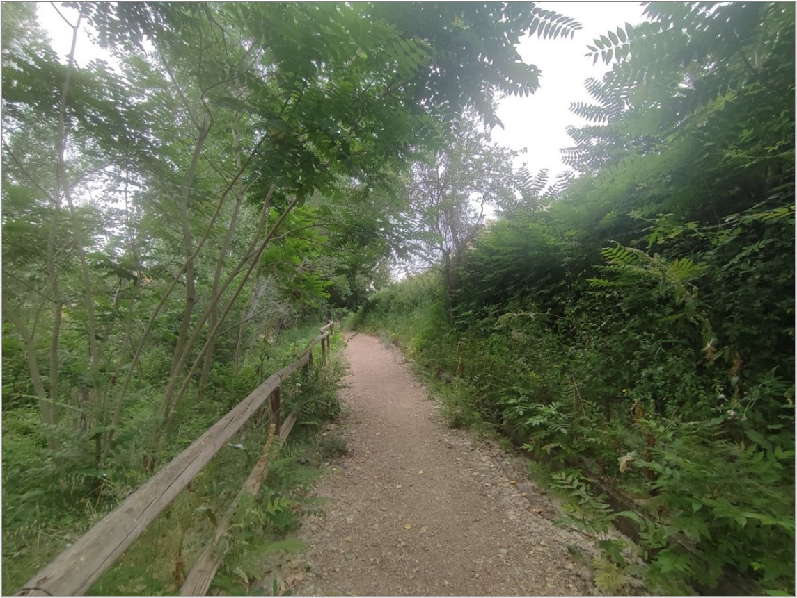
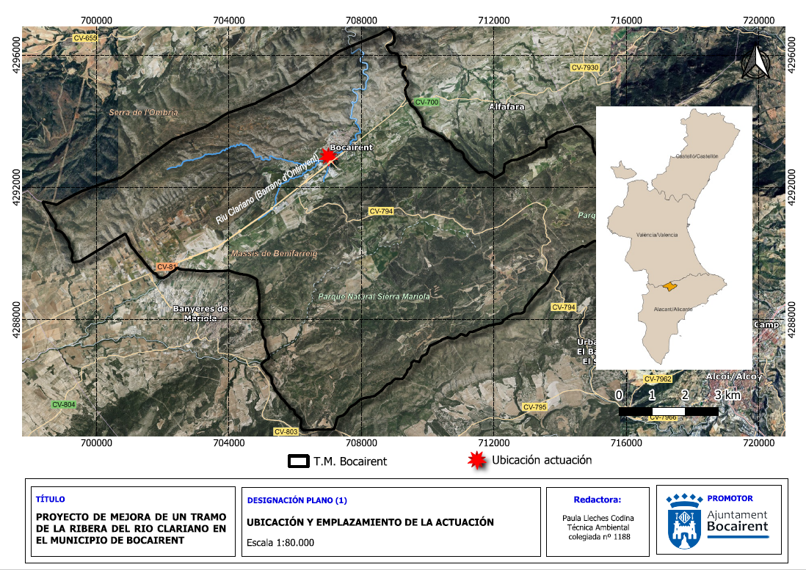
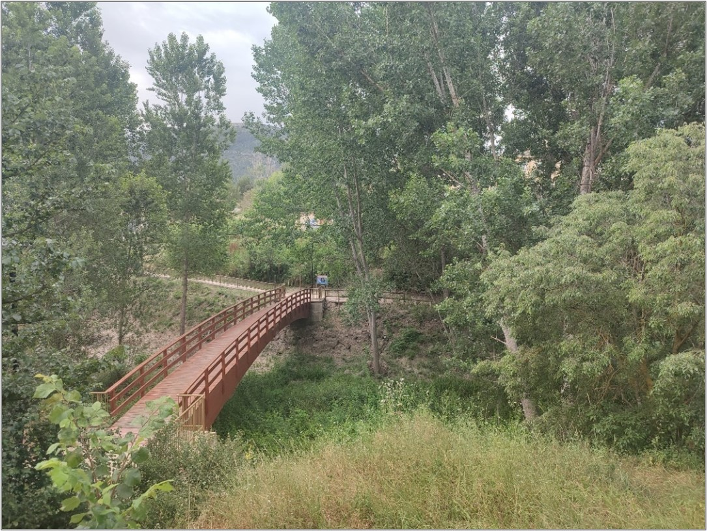

Introducción
Proyecto orientado a la recuperación ecológica y paisajística del tramo del río Clariano dentro del casco urbano de Bocairent en el marco de subvenciones de Gestión y Conservación de Espacios Naturales (convocatoria 2025) de la Diputación de Valencia, con el fin de renaturalizar el entorno fluvial y ofrecer un espacio verde de ocio y disfrute para la ciudadanía.
Objetivos del proyecto
- Poda selectiva de chopos con riesgo estructural o de caída.
- Eliminación de especies de flora invasoras (caña y ailanto).
- Desbroce de una franja alrededor del cauce del rio para prevención de incendios forestales.
- Plantación de especies autóctonas de ribera.
Consulta el documento completo del proyecto: 📄 Documento memoria
Galería de imágenes


